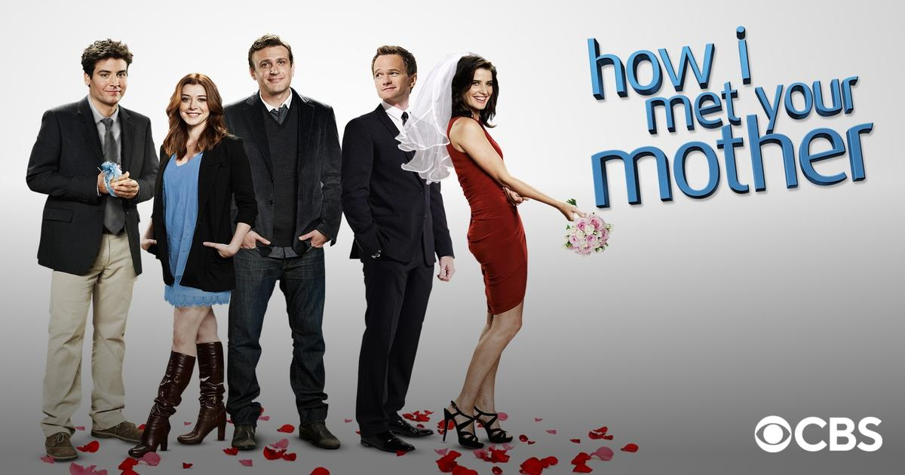
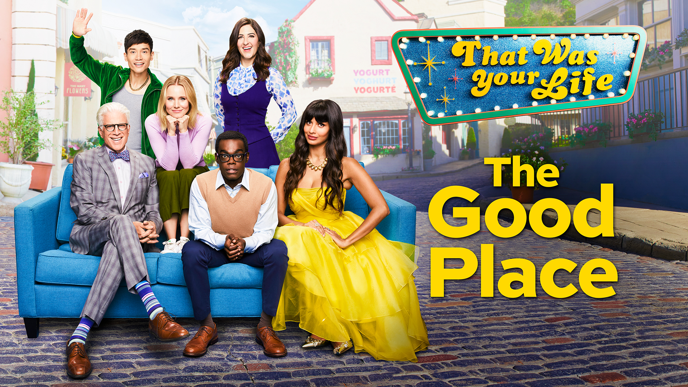
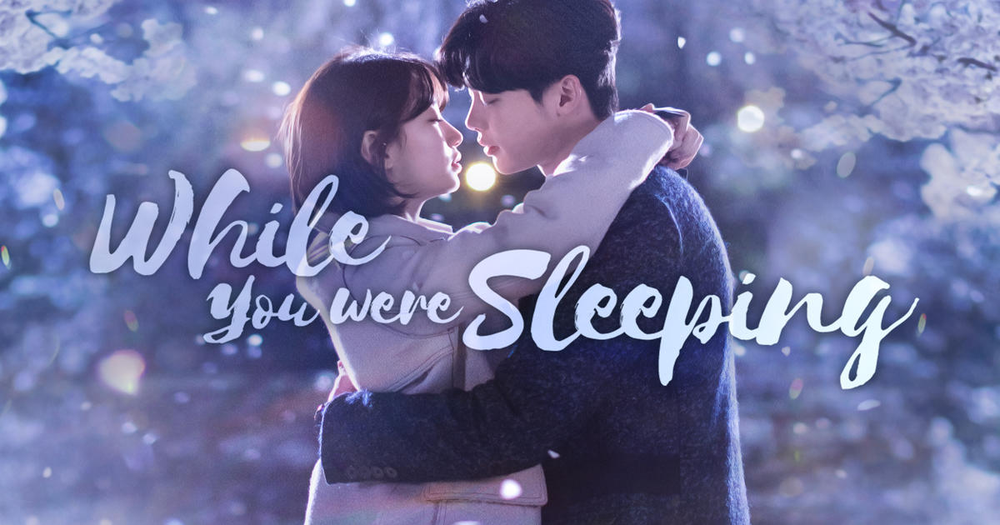

Dance
I got into dance when I was in high school, starting with my school's end of year showcase, where I joined a K-Pop Community Dance Crew and performed on stage for the very first time. After that, I participated in many other showcases and even joined the school's dance team, Stuy Legacy. Because of that, I decided that I wanted to continue my dance experience at Carnegie Mellon. I joined Helix Dance Crew in the fall of my first year, and have been a part of it ever since. We usually perform at Dancer's Symposium, as well as TSA Culture Night and various other showcases at CMU.

Every semester, we choreograph and perform a new set. Here is last semester's set, centered around a popular singer, Jason Derulo:
We also host open classes and auditions every semester for anyone to join in! Helix Dance Crew has taught me a lot, not only about dance, but about the community that is built and centered around it.
Kappa Phi Lambda
In the spring semester of my freshman year, I decided to rush for Kappa Phi Lambda, after hearing about Asian-interest sororities on campus. I was excited to get to know more people as well as give back to the community that allowed us to be here today. After officially joining KPL, I became the co-fundraising chair, as well as the performance chair. I help raise money for our sorority, as well as for our philanthropic efforts with my co-fundraising chair, Elaine Wang. As the performance chair, I create choreography and strolls that we will perform at CMU's various showcases, one of them including TSA Culture Night.
This is my class!

While being a part of this organization is still new to me, I'm excited to learn more throughout the rest of my years here at CMU!
TV Shows
Outside of school-related activities, I love to watch TV shows, as does everyone else. I'm constantly on the lookout for new TV shows, although my self-proclaimed love for TV shows doesn't stop me from ignoring every mainstream TV show long enough that when I finally start to watch it, it's past its tenth season.
Recently, some of the shows that I've watched (and highly recommend) are:
- How I Met Your Mother
Although old and definitely popular, I didn't watch this show until very recently. I'd heard so many wonderful things about it, and I agree with every single one of them (except the ending, but that's another topic to discuss). One of my favorite things to do is to watch others grow throughout their lives, whether in a fake setting, like HIMYM, or watching my favorite YouTubers and growing up alongside them, which is why I loved HIMYM so much.

- The Good Place
This is by far my favorite show on Netflix. I wasn't too into comedy/rom-com type shows before How I Met Your Mother, so after I finished that, I found The Good Place. I really loved its storyline, and just how much the characters bonded with each other and grew independently as well.

- While You Were Sleeping
This is a Korean drama, but it is one that has made me cry endlessly every single time that I watch it. The storyline, albeit confusing at first, is so fun to follow once figured out. It combines sci-fi, mystery, and romance all into one.
